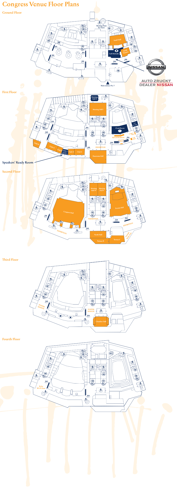

The 3 rd Congress of the European ORL-HNS is being held at the Prague Congress Centre (PCC) which is one of Prague‘s modern architectural landmarks and the largest convention and culture centre in the Czech Republic. The location is very practical since it‘s easily accessible from the city centre by underground (subway) and motorway (highway). The PCC is connected to the metro station and off ers extensive parking facilities.
5. května 65
140 21 Prague 4, Czech Republic
Phone: +420 261 171 111
www.kcp.cz
